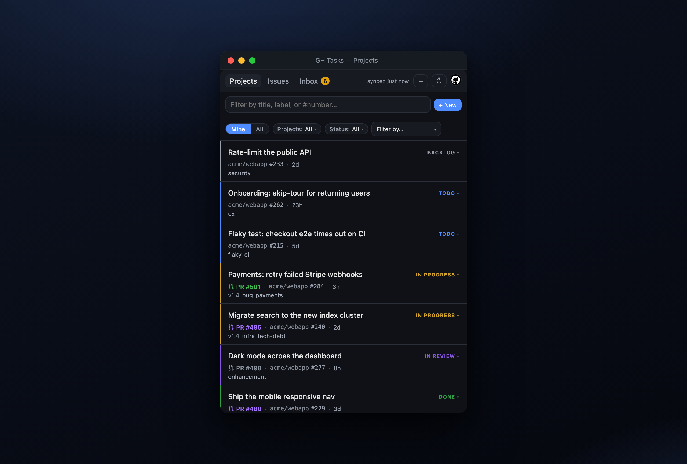
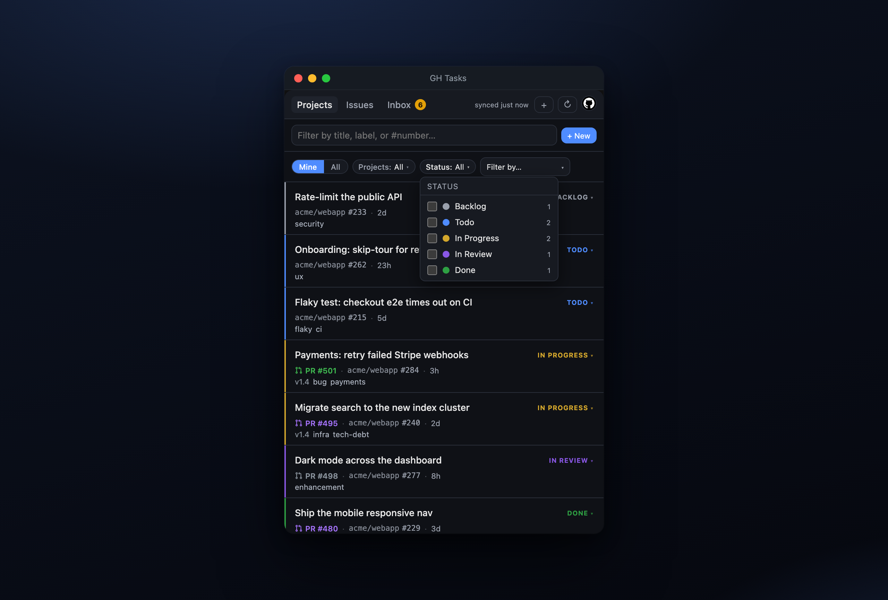
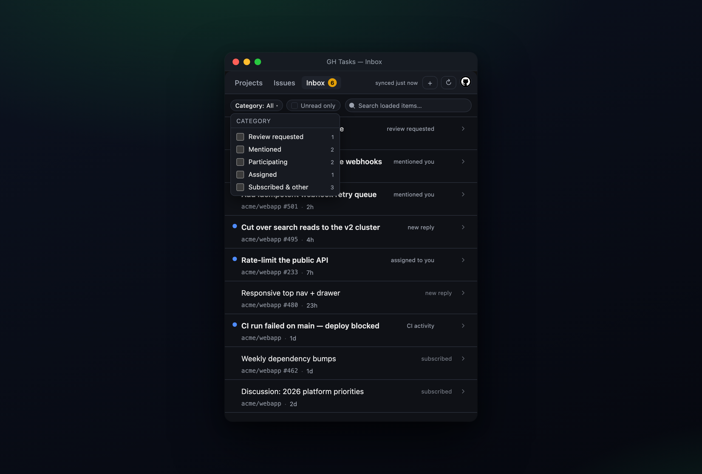
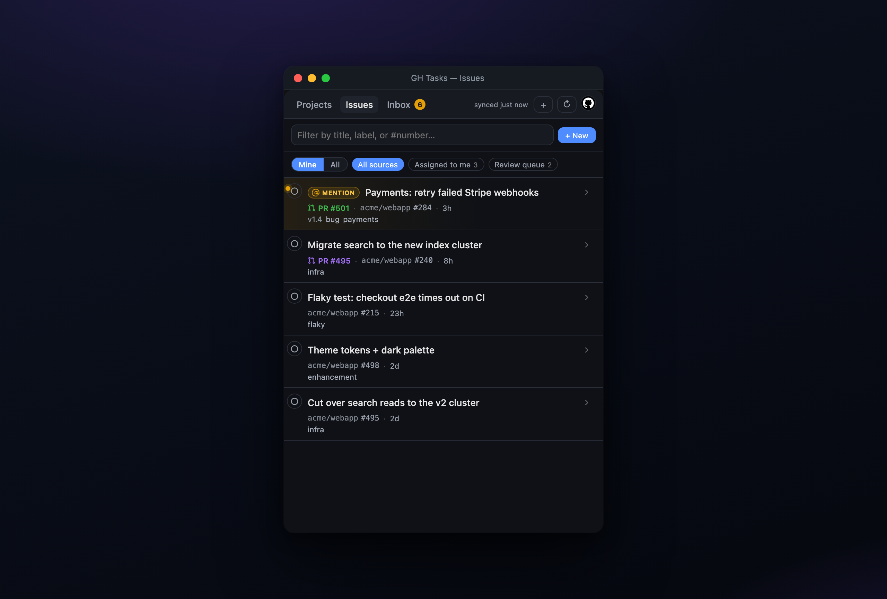
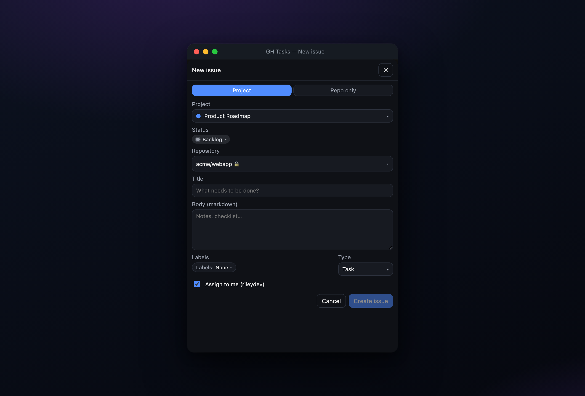
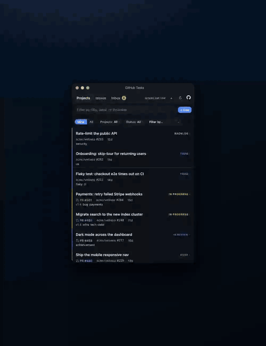

A fast, keyboard-friendly menu-bar app that folds GitHub Issues, Projects, and your notifications inbox into a single task list. Open in a tap, gone when you're done — no browser tab, no context switch.

One list spans every repo and Projects v2 board you add. Filter by typing. Never reopen that tab again.
Add a Source — a Projects v2 board or a (repo, search query) pair — and its items flow into one keyboard-navigable list. Status pills, priorities, labels, milestones, and a color stripe per row. Multi-select status filters, source filters, and any custom single-select field.

A faithful mirror of github.com/notifications — review requests, mentions, replies, assignments, CI, subscriptions — read and unread, with infinite scroll and search. Filter by category with checkboxes, flip Unread only to cut to the chase, and mark read straight back to GitHub.

The Issues tab runs your GitHub search queries across repos and drops the results into the same fast list — assigned to you, your review queue, whatever you define. Linked PRs and milestones fill in automatically.

Spin up a new issue — attach it to a project and set its status, pick the repo, labels, and issue type, assign it to yourself — from a modal that never leaves the menu bar. Then get back to work.

The whole loop, without a single browser tab.

Nothing here needs the mouse. The window is small on purpose, fast on purpose, and closes the moment you're done.
The window snaps open under the tray icon and paints instantly from disk cache while a fresh sync runs underneath.
Filter any list by title, label, or #number as you type — no menus, no clicks.
Sources, row density, poll interval, launch-at-login — all a shortcut away, all persisted.
Grab the latest signed build. Sign in once with GitHub's device flow — no password, no backend, token stored in your OS keychain.
Scopes: repo read:user read:org notifications project